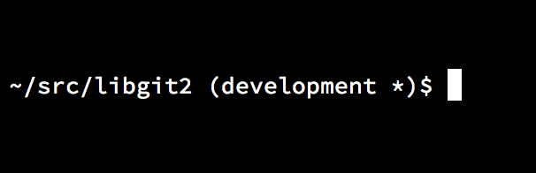

. ~/git-completion.bashBash 中的 Git
如果你是一名 Bash 用户，你可以从中发掘出一些 Shell 的特性，让你在使用 Git 时更加随心所欲。 实际上 Git 附带了几个 Shell 的插件，但是这些插件并不是默认打开的。
首先，你需要从 Git 源代码中获得一份 contrib/completion/git-completion.bash 文件的拷贝。
将这个文件复制到一个相对便捷的目录，例如你的 Home 目录，并且将它的路径添加到 .bashrc 中：
做完这些之后，请将你当前的目录切换到某一个 Git 仓库，并且输入：
$ git chec<tab>……此时 Bash 将会把上面的命令自动补全为 git checkout。
在适当的情况下，这项功能适用于 Git 所有的子命令、命令行参数、以及远程仓库与引用名。
这项功能也可以用于你自己定义的提示符（prompt），显示当前目录下 Git 仓库的信息。
根据你的需要，这个信息可以简单或复杂，这里通常有大多数人想要的几个关键信息，比如当前分支信息和当前工作目录的状态信息。
要添加你自己的提示符（prompt），只需从 Git 源版本库复制 contrib/completion/git-prompt.sh 文件到你的 Home 目录(或其他便于你访问与管理的目录)， 并在 .bashrc 里添加这个文件路径，类似于下面这样：
. ~/git-prompt.sh
export GIT_PS1_SHOWDIRTYSTATE=1
export PS1='\w$(__git_ps1 " (%s)")\$ '\w 表示打印当前工作目录，\$ 打印 $ 部分的提示符（prompt），__git_ps1 " (%s)" 表示通过格式化参数符（%s）调用git-prompt.sh脚本中提供的函数。
因为有了这个自定义提示符，现在你的 Bash 提示符（prompt）在 Git 仓库的任何子目录中都将显示成这样：

Figure 1. 自定义的
bash 提示符（prompt）.这两个脚本都提供了很有帮助的文档；浏览 git-completion.bash 和 git-prompt.sh 的内容以获得更多信息。